Inhalt Index DeskTop Bronstein

 Algebra und Diskrete Mathematik Klassische algebraische Strukturen Lie-Gruppen
Algebra und Diskrete Mathematik Klassische algebraische Strukturen Lie-Gruppen


Die Elemente a einer kontinuierlichen Gruppe G können eindeutig und vollständig durch einen Satz reeller Parameter 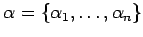 charakterisiert werden, von denen mindestens einer bei Durchlaufen der Gruppe kontinuierlich variiert. Die Anzahl n der Parameter wird als Ordnung oder Dimension d der kontinuierlichen Gruppe bezeichnet. Eine kontinuierliche Gruppe ist eine unendliche Gruppe.
Jedes Gruppenelement 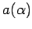 entspricht einem Punkt 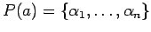 im n-dimensionalen Parameterraum 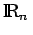. Durch die Festlegung, daß dem neutralen Element e der Gruppe G im Parameterraum das n-Tupel 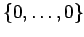 entspricht, 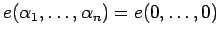, wird in 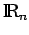 ein Koordinatensystem eingeführt. Jeder Umgebung U(a) eines Punktes P(a) im Parameterraum entspricht einer Umgebung W(a) in der Gruppe  . Sind und 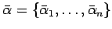 die Parameter des Gruppenelements a bzw. des inversen Elements 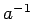, dann gilt für die Gruppenmultiplikation 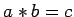:
. Sind und 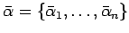 die Parameter des Gruppenelements a bzw. des inversen Elements 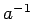, dann gilt für die Gruppenmultiplikation 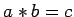:
| 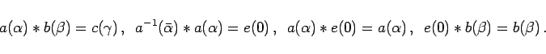 | (5.131) |
| Beispiel |
|
Die zweidimensionalen Drehungen um einen festen Punkt in einer Ebene bilden eine kontinuierliche Gruppe der Dimension 1. Die Gruppenelemente R werden durch den Drehwinkel 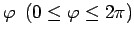 bestimmt, 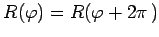. Das neutrale Element der Gruppe ist 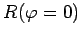. Das inverse Element 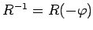 bedeutet eine Drehung um den gleichen Winkel in entgegengesetzter Richtung: 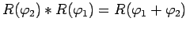. Die Gruppe ist eine ABELsche Gruppe: 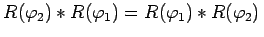. |
Die Einführung des Drehwinkels  ist nicht die einzige Möglichkeit, die Gruppenlemente zu parametrisieren. Jede beliebige monotone Funktion 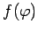 könnte ebenfalls zur Charakterisierung der Gruppenelemente herangezogen werden.
ist nicht die einzige Möglichkeit, die Gruppenlemente zu parametrisieren. Jede beliebige monotone Funktion 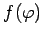 könnte ebenfalls zur Charakterisierung der Gruppenelemente herangezogen werden.